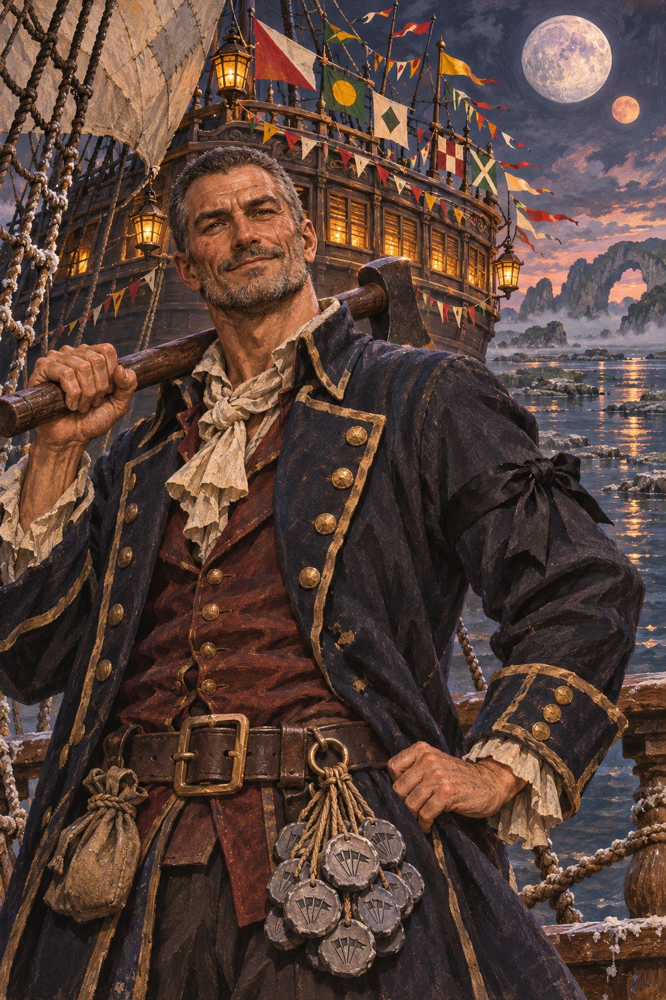
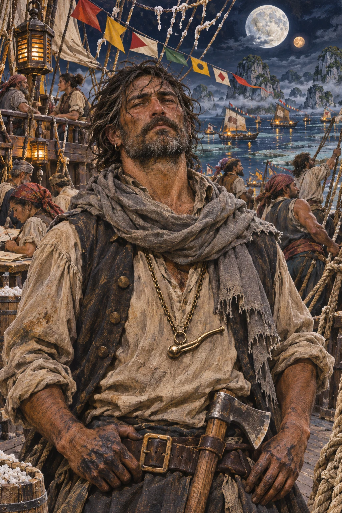

Взять у «Сверки» высоту белой воды, выстоять абордаж флагмана и прочесть приказ, который скрыл Кречет.
Варвара Зыбь

Арвид Кречет

Тар КилльЕвдокия Веш
Если партия изменила план
Если «Складень» заблаговременно сняли с мели
Поставьте корабль на его фактическое место. У террасы противник находит след стоянки. Что сделает караван с полученной дистанцией: потратит её на отставшее судно или первым займёт проход? Запишите нового замыкающего.
Повороты сюжета в этот вечер
Поворот: Два приказа одного дня
Кажется, что блокада Трёх Устьев — последняя воля адмирала Галса, и спорить с ней значит спорить с мёртвым. На деле в тот же день адмирал отменил утренний приказ в части Чаши: людей и их суда пропустить, цепь опустить, задержавших — вне Товарищества и без доли. Капитан флагмана сжёг письмо у трапа, спустил начатый сигнал и написал на полях: «Бред. Не возить».
За полночь Тар Килль без огня подходит к «Сверке» на шлюпке и кладёт на планширь журнал адмирала: «Я вёз это письмо. Он его сжёг. Вот почему». На последней странице два приказа одного дня, одна рука, две печати с китом, а на полях карандашом: «Бред. Не возить. А. К.». Пусть стол сам сложит доску Нэры, книгу «Ласки» и оборот листа Варвары. Если Тар не нашёл экипаж этой ночью, он приносит журнал на Скамью Прилива, а вечерний приказ уже читается по листу Варвары флажной азбукой.
После него: Блокада теперь держится не на приказе, а на молчании. Слова «вне Товарищества и без доли» — оружие сильнее абордажа: увидев вечерний приказ со слов Инны или сигналом на мачте Цепного Камня, патрули ложатся в дрейф, и флотилия раскалывается прямо в проливе.
Утро седьмого дня. Под килем «Складня» ещё глубоко, а впереди, на широкой каменной террасе, которую море открывает только в отлив, лежит «Сверка» — промерное судно под нейтральным вымпелом, серым, без знаков. На её палубе сохнут медные чашки, которыми черпают ил со дна, и мерные рейки с цветными зарубками. Промерщиков в Дуге не трогает ни одна сторона: они меряют воду для совета и для всякого, кто спросит, и по их таблицам живут и капитаны, и рыбаки.
Женщина в фартуке поверх куртки, с белым илом на рукавах, машет рейкой и показывает на воду: уходит. За ночь соль выступила на снастях «Складня» белыми кольцами, и канаты хрустят под пальцами. С глубокой стороны моря пусто — ни паруса, ни огня. Евдокия смотрит не на террасу, а туда, и не убирает руки с леера.
Подготовка и роли
Перелом. Вода: утром полная — к «Сверке» можно подойти; днём малая — «Складень» на грунте рядом с ней. Флагман приходит всегда, с глубокой стороны; бой «Сто Вымпелов у борта» обязателен. Тревога: бой +1; при 7+ в конце сцены 3 огни флагмана. Бой: Кречет (КД 13, 67 хитов, секира +5, 1d12+3) и абордажники флагмана 2/2/3/3 при 5/6/7/8 игроках, других на поле нет; отряд с запада (штурвал B4), противники с востока (лини M2, M4, M7). Кречет на 10 хитах или меньше сдаёт бой и уводит своих. Варвара вписывает в листок Ольгера «3; шесть»: вода прорыва 3 на вехе, стоит шесть ходов. Два независимых пути к вечернему приказу, ни один не за броском. Путь А — журнал: Тар, отказавшийся жечь «Сверку», приносит его ночью при любом итоге боя; не нашёл экипаж — приходит в вечер 6 на Скамью. Путь Б — лист Варвары: отдаёт в сцене 1, если экипаж против флагмана, иначе в сцене 2; читают по азбуке Нэры или книге «Ласки», утренний приказ стол видел на доске Узла; азбуки нет — лист читает Тар. Инна признаёт любой путь: журнал или лист вместе с Варварой. Итог боя — «Складень» или «Ласка» во второй половине. Кречет хочет забрать или сжечь доказательства (книгу «Ласки», лист, журнал). Перерыв 15 минут после сцены 2.
Фома Слюда сверяет солемер с вехой Варвары и первым читает пары флажков на обороте её листа.
Прохор Фал держит штурвал «Складня» на B4, пока Кречет идёт к нему по наклонной палубе.
Руся Нагель рубит три абордажных линя топором с латунным обухом и решает, когда «Складень» свободен.
Если за столом есть Ник Уток, Ася Капель или Денис Ветр: Ник рубит линь рядом с Русей, Ася держит людей «Сверки» тихо у борта, Денис первым видит паруса флагмана с глубокой стороны и ведёт лодку к «Ласке».
Сцена 1 · 50 минут
«Сверка» на террасе
Борт «Складня» мягко ложится на кранцы «Сверки», и старое промерное судно отвечает долгим скрипом. Палуба у него низкая, в пятнах засохшего ила; у мачты, перетянутый ремнями, лежит непромокаемый футляр, а у самого борта из камня террасы поднимается высокая мерная веха. Судно так и прозвали: по его промерам в Дуге сверяют приливные листки. Солнце греет мокрые доски, и от них идёт лёгкий пар. Женщина в фартуке перешагивает через леер и протягивает ладонь, серую от ила. «Варвара Зыбь, — говорит она. — Листок Ольгера при вас? Внизу у него пустая строка, и я знаю, что туда вписать. Плюс-минус ход».
Полная вода: «Складень» подходит к «Сверке» борт в борт; к полудню придёт малая, и тот, кто останется, сядет на террасу. Варвара Зыбь, белый ил на рукавах, берёт у экипажа листок Ольгера и вписывает углём в пустую строку внизу: «Три отметки. Шесть ходов. Плюс-минус ход». На листке теперь стоит «3; шесть» — вода ночи прорыва. Фома может сверить солемер: ил в трубке встаёт так же. Потом Варвара кладёт руку на непромокаемый футляр с промерами и смотрит на ваш флаг, а не на вас. Если экипаж покажет, что он против флагмана, — пломбу с веером вымпелов, строку книги «Ласки» или просто скажет «флагман гонится за нами», — она достаёт второй лист: на обороте углём пары кружков с буквами (раздатка «Оборот приливного листа»). «Он рисовал кружки с буквами и сказал: отдай Инне. Я не отдала. Я испугалась». Спросят кого — тише: «Капитан флагмана обещал сжечь „Сверку“, если я понесу Инне бред». Судовая работа для лишних рук: впередсмотрящий — глубокая сторона моря. Евдокия, не отводя глаз от горизонта: «Вода уходит. Ждём здесь или уходим, пока глубоко?»
Выборы — и что будет дальше
Показать Варваре пломбу с вымпелами, строку книги «Ласки» или сказать, что флагман гонится за вами, — и получить лист с флажками.
Варвара смотрит на пломбу с вымпелами, потом на горизонт, где пока никого нет. Из футляра она достаёт второй лист: на обороте углём пары кружков с буквами. «Он рисовал кружки с буквами и сказал: отдай Инне. Я не отдала. Я испугалась». Тише — про капитана флагмана, который обещал сжечь «Сверку». Лист теперь у экипажа: сорок дней молчания, нарисованные флажной азбукой.
Прочесть флажки сразу: по азбуке Нэры, по сигнальной книге «Ласки» или по смыслу пар.
Кружки складываются в буквы, буквы — в слова: людей Чаши и их суда пропустить в белую воду Средним Устьем, цепь опустить, долг — с совета, не с людей. Это вечерний приказ адмирала, нарисованный флажками. Варвара бледнеет: «Я сорок дней носила это рядом с промерами». С азбукой Нэры или книгой «Ласки» он читается дословно; по смыслу пар — медленно, сверяя каждую с соседней.
Остаться у «Сверки» и сесть на террасу рядом с ней на малой воде.
Вода уходит, и «Складень» садится на террасу рядом со «Сверкой», борт к борту, с креном к востоку. Бросить её здесь — значит оставить промеры и лист под абордажем флагмана. Остаться — значит принять бой на грунте, когда вода сама решит, сколько он продлится. Варвара кладёт ладонь на футляр: «Спасибо. Плюс-минус ничего — просто спасибо». А с глубокой стороны уже встают паруса со ста вымпелами.
Уйти, пока глубоко: флагман всё равно выходит с глубокой стороны и прижимает «Складень» к краю террасы.
«Складень» отходит, пока под килем глубоко, — но далеко уйти не успевает. С глубокой стороны встают паруса флагмана и прижимают судно к краю террасы, туда, где вода уже уходит. Бой будет всё равно, только «Сверка» окажется дальше, а Варвара — одна со своим футляром. Евдокия кладёт руль, не оглядываясь: «Вода решила за нас. Значит, бьёмся там, где она оставила».
Проверка и путь без броска
Интеллект (Анализ) Сл 12 — прочесть флажки без азбуки. Без броска — по раздатке «Флажная азбука» (Нэра, вечер 2) или по сигнальной книге «Ласки» (вечер 4): стол читает сам, минута на всех; утренний приказ стол видел на доске Узла. Высоту и срок белой воды Варвара называет без броска. Тревога не двигается, если днём не идти под парусом на виду у дозора.
Если не получилось
Не показали, что вы против флагмана, — Варвара лист не отдаёт до сцены 2, когда паруса флагмана встают над террасой: «Берите, пока его не сожгли!». Нет азбуки — лист в сцене 3 прочтёт Тар.
Сцена 2 · 50 минут
Сто Вымпелов у борта
Малая вода: терраса голая до самого края, и «Сверка» лежит на мокром камне, как рыба на прилавке. Над краем террасы, с глубокой стороны, поднимаются паруса — сначала верхушки мачт, потом весь высокий борт. На реях полощутся вымпелы, их так много, что пестрит в глазах: «Сто Вымпелов» в Дуге узнают издалека, и дозоры уступают ему воду. На корме чернеет траурная лента: адмирал Галс умер на этом корабле. Тень флагмана ложится на палубу, и сразу становится холодно. На мостике стоит высокий коротко стриженный человек, у пояса у него тяжёлая секира и связка свинцовых пломб. У борта, на планке, боцман в сером шарфе подносит к губам дудку.
Малая вода, и она уже пошла назад: «Складень» стоит на грунте с креном к востоку, рядом «Сверка». С глубокой стороны встают паруса — на мачтах сто вымпелов, на планке у борта боцман в сером шарфе. Высокий борт подходит к краю террасы с востока, и три кошки ложатся на восточный борт «Складня» — на M2, M4 и M7. Арвид Кречет с мостика, вежливо и громко: «По приказу адмирала — под пломбу. Людей не трону: они мне ещё проголосуют». Встреча «Сто Вымпелов у борта»: отряд на западе палубы, у штурвала B4; с востока идут Кречет с секирой и абордажники флагмана — двое при пяти и шести игроках, трое при семи и восьми. Цель — перерубить три линя и удержать штурвал. В конце раунда 4 вода поднимет «Складень»; с этого раунда, когда все три линя перерублены, он отходит и бой кончен. Кречет на 10 хитах или меньше сдаёт бой: «Хватит. Назад, на борт» — его люди прыгают на флагман. Во втором раунде он кричит: «Тар! Огонь на „Сверку“!» Тар Килль не сходит с планки: «Не буду. Там люди». Евдокия у штурвала, сквозь зубы: «Он забирает своё — по бумаге» — «Складень» заложен Товариществу. Если лист ещё у Варвары, она бросает его через борт. Тревога +1 — выстрел. Судовая работа для лишних рук: шлюпка у западного борта — путь к «Ласке».
Выборы — и что будет дальше
Держать штурвал на B4 против Кречета и абордажников.
Штурвал держат против секиры: Кречет идёт с востока, вежливо улыбаясь, абордажники за ним. Пока штурвал в руках экипажа, «Складень» остаётся «Складнем»: поднимется вода — и он отойдёт сам. Кречет бьёт и говорит одновременно: «Отдайте руль, и никто не пострадает. Мне нужно судно, а не вы». Евдокия рядом, сквозь зубы: «Он забирает своё — по бумаге». Залог «Складня» больше не тайна.
Рубить лини на M2, M4, M7: топор Руси — бонусным действием.
Три кошки флагмана держат «Складень» за восточный борт. Плотницкий топор и чужие клинки рубят лини один за другим. Каждый перерубленный — шаг к свободе: когда поднимется вода и все три будут перерублены, «Складень» отойдёт и бой кончится. На планке флагмана боцман в сером шарфе смотрит на это и не зовёт абордажников. Кречет кричит: «Тар! Огонь на „Сверку“!» — и Тар не двигается.
Прикрыть «Сверку» и Варвару от абордажников.
Кто-то встаёт у борта «Сверки», между абордажниками и Варварой с её футляром. Это руки, которых не хватит у штурвала и у линей, зато промеры и, может быть, лист останутся целы. Кречет командует: «Тар! Огонь на „Сверку“!» Тар Килль не сходит с планки: «Не буду. Там люди». Если лист ещё у Варвары, она бросает его через борт экипажу. Кто прикрывал «Сверку», тот слышал этот отказ.
Бросить «Складень» и уйти через западный борт в лодки к «Ласке» за террасой.
Судно — доски. Экипаж прыгает через западный борт в шлюпку и уходит к «Ласке», что ждёт на глубокой воде за террасой. «Складень» достаётся Кречету: он уйдёт с флагманом под пломбой, и в ночь прорыва вместо него в караване пойдёт тендер. Евдокия уходит последней, один раз оглянувшись: «Судно — доски. Люди — люди». Флагман не преследует: своё он забрал, по бумаге.
Проверка и путь без броска
Бой — обычными бросками. До инициативы: Мудрость (Внимательность) Сл 12 — увидеть, куда лягут кошки, и встать у линей; без броска — Евдокия называет их сама: «Нос, середина, корма. Режь». Перерубить линь — действие у линя без броска. Фома по солемеру без броска знает, что вода поднимет судно в конце раунда 4. Проверки дозора нет: флагман уже здесь. Абордажников 2/2/3/3 при 5/6/7/8 игроках; тревога и бочка «Ласки» их число не меняют.
Если не получилось
К концу раунда 6 линь цел или абордажник у штурвала — «Складень» взят: экипаж и Евдокия уходят через западный борт в лодки к «Ласке», где ждут двое её людей. Дальше Евдокия ведёт «Ласку»; журнал Тар принесёт всё равно.
Сцена 3 · 50 минут
Журнал
Вода возвращается на террасу ночью, без шума: сначала журчит в трещинах камня, потом подбирается к днищам и тихо их покачивает. Огней нет ни на одной палубе. Звёзды над Дугой такие яркие, что на снастях видна соль. По прибывающей воде голос идёт дальше, чем по отливной, — это знает в Дуге любой вахтенный, — и слово, сказанное на палубе, сейчас слышно за кабельтов. С глубокой стороны без фонаря подходит шлюпка; вёсла обмотаны тряпьём и почти не плещут. На вёслах один человек — тот самый боцман в сером шарфе, что днём стоял на планке флагмана. Он табанит у борта, кладёт на планширь свёрток в парусине и хрипит: «Не светить. Принимай».
Малая вода позади, вода прибывает: к ночи «Сверка» всплывёт. Огней не зажигают; шторный фонарь Василисы светит вниз, в ладонь. Судовая работа для лишних рук: дисциплина огня — ни одного открытого огня на палубе. За полночь с глубокой стороны без огня подходит шлюпка, на вёслах один человек — Тар Килль, руки в смоле. Он кладёт на планширь свёрток: журнал в парусине, медные уголки, соль в обрезе. «Я вёз это письмо. Он его сжёг. Вот почему». На последней странице — два приказа одного дня (раздатка «Страница журнала адмирала»), на полях карандашом: «Бред. Не возить. А. К.». Спросят про письмо: «Вечерняя шлюпка. У трапа он сказал: адмирал в бреду, бред не возят. И в камбузную печь». Спросят, как достал: «Второй ключ от сундука — у боцмана. Я чищу его каюту». Если у стола лист Варвары, а азбуки нет, Тар читает пары с одного взгляда. Евдокия читает вечерний приказ дважды: «Галс говорил: людей не держим. Я десять лет водила его вельбот. Вот она — вся его рука». Тар смотрит на горизонт: «Он хватится к утру. Решайте, куда это несёте».
Выборы — и что будет дальше
Взять Тара с собой — или оставить на «Сверке»: тогда он идёт с ней к Горлу.
Тара берут с собой — и у экипажа появляется человек, который ставил цепь, знает отзыв дозоров и держал тормоз своими руками. Или он остаётся на «Сверке» и идёт с ней к Горлу, рядом с Варварой. От Кречета он ушёл в любом случае: в ночь прорыва он высадится на Цепной Камень, и стопор при нём выбьют одним движением. Тар, не глядя ни на кого: «Куда скажете. Только не обратно».
Нести журнал к Инне на Скамью Прилива — показать или отдать.
Журнал решают нести на Скамью Прилива, к Инне Сольве: она получила только утренний приказ и держит блокаду по нему честно. Показать журнал — и она признает руку адмирала. Отдать — и она прочтёт его патрулям сама. Тар хрипит: «Ей сказали — умер ночью, без новых слов. Она поверила. Я бы тоже поверил». Евдокия заворачивает журнал в парусину: «Утром — к Скамье, по малой воде».
Держать журнал у себя до ночи прорыва: сигнал по нему поднимают азбукой.
Журнал остаётся у экипажа, в парусине, под палубой. В ночь прорыва его слова поднимут на мачте Цепного Камня флажной азбукой, и патрули прочтут вечерний приказ прямо в проливе: «вне Товарищества и без доли». Без Инны это риск: до мачты надо ещё добраться. Тар соглашается не сразу: «Флагам команды верят. Особенно тем, что однажды уже спустили».
Расспросить Тара о письме, трапе и втором ключе.
Тар отвечает коротко, как дудкой. Письмо вёз он, на вечерней шлюпке; у трапа капитан забрал его: «Адмирал в бреду. Бред не возят» — и в камбузную печь. Текста Тар не читал. Второй ключ от сундука у него: он чистит каюту. Сорок дней молчал. Почему пришёл сейчас? Тар смотрит на воду, где ещё недавно стоял флагман: «Он велел жечь „Сверку“. Там люди. Хватит».
Проверка и путь без броска
Нужной проверки нет: журнал, пометка и рассказ Тара даются без броска. Мудрость (Проницательность) Сл 10 — понять, что Тар не подослан; без броска — пометка «А. К.» на полях: Тар узнаёт руку капитана. Открытый фонарь, чтобы читать, — огонь ночью, тревога +1; шторный фонарь Василисы — нет. При тревоге 7+ в конце сцены огни флагмана: зажигали огонь — замеченный парус +1, иначе он проходит мимо.
Если не получилось
Стол не верит Тару — он оставляет журнал и уходит на «Сверку», идёт с ней к Горлу. Не нашёл экипаж ночью — приходит с журналом в вечер 6 на Скамью под белым флагом Инны.
Флажки на обороте
Оборот листа с таблицей воды: углём нарисованы пары кружков с буквами внутри, через точки. Внизу другой рукой короткая приписка с инициалами «В. З.».
Что можно установить
Набросок флажного сигнала рукой адмирала Галса: «Отменить утренний приказ. Чаша — пропустить. Белая вода, Среднее Устье. Цепь опустить. Долг — совет Дуги. Задержать — вне Товарищества, без доли. Распорядительнице. Адмирал». Это вечерний приказ; адмирал велел Варваре отдать лист Инне Сольве, а она испугалась и не отдала.
Получение
Вечер 5, сцена 1: Варвара отдаёт лист, когда экипаж показывает, что он против флагмана (пломба с вымпелами, строка книги «Ласки», «флагман гонится за нами»); иначе в сцене 2: «Берите, пока его не сожгли!». Читать по азбуке Нэры или книге «Ласки» — без броска.
Запасной путь
Нет азбуки — Тар Килль в вечер 5, сцена 3, читает лист с одного взгляда, пару за парой. Инне лист показывают вместе с Варварой: та сама рассказывает, как адмирал рисовал флажки.
Два приказа одного дня
Последняя исписанная страница журнала в парусиновой обложке с медными уголками: две записи одной рукой, под каждой печать — кит в круге из узлов. На полях второй записи — карандашная пометка другой рукой с инициалами.
Что можно установить
Оба приказа третьего дня Сельдяного месяца подлинные: одна рука, одна печать. Утренний закрывает Три Устья и велит ставить суда с солью или людьми Чаши под пломбу. Вечерний отменяет его в части Чаши: людей Чаши и их суда пропустить Средним Устьем в белую воду, цепь опустить, долг — с совета, не с людей и не с их соли; кто задержит судно с людьми Чаши — вне Товарищества и без доли; копию — Инне Сольве. Пометка «Бред. Не возить. А. К.» — рука Кречета: он скрыл вечерний приказ, и Инна ведёт блокаду по одному утреннему.
Получение
Путь А, без броска: вечер 5, сцена 3 — при любом исходе боя Тар Килль ночью без огня приводит шлюпку с журналом: «Я вёз это письмо. Он его сжёг. Вот почему». Не нашёл экипаж ночью — приходит с журналом в вечер 6, сцена 1, на Скамью под белым флагом Инны.
Запасной путь
Путь Б, без броска: оборот листа Варвары (вечер 5), прочитанный по азбуке Нэры или книге «Ласки», даёт текст вечернего приказа, а утренний висит на доске Узла. Нет азбуки — лист читает Тар. Инна признаёт лист, если с ним приходит Варвара.
Письмо, которое не довезли
Хриплый короткий рассказ боцмана флагмана о вечерней шлюпке, которая в ночь смерти адмирала так и не отошла от трапа.
Что можно установить
Вечером третьего дня Тар Килль повёл вечернюю шлюпку с письмом адмирала к Инне Сольве. Кречет остановил его у трапа — «Адмирал в бреду. Бред не возят» — и сжёг письмо в камбузной печи. Кречет нарочно не дал вечернему приказу дойти до распорядительницы. Тар молчал сорок дней.
Получение
Вечер 5, сцена 3: Тар рассказывает сам, отдавая журнал; достаточно спросить, почему он пришёл. Проверка не нужна; Проницательность Сл 10 лишь подтверждает, что он не подослан.
Запасной путь
Пометка на полях журнала — «Бред. Не возить. А. К.» — говорит то же без Тара: Инна узнаёт руку Кречета. Если Тар пришёл в вечер 6, он рассказывает на Скамье.
Изменения после решений
Если «Складень» взят в бою → Евдокия ведёт «Ласку»; в ночь прорыва фишка каравана — «Ласка» вместо «Складня». «Складень» уходит с флагманом под пломбой.
Если Стол прочёл оба приказа (журнал или лист вместе с доской Узла) → В вечер 6 Инне можно показать доказательство: журнал или лист с Варварой. Руку она признаёт без броска.
Если Тар принёс журнал (сейчас или в вечер 6) → Тар ушёл от Кречета: в ночь прорыва он высаживается на Цепной Камень, стопор при нём выбивают одним действием, тормоз он держит сам.
Выдать в нужный момент
Оборот приливного листа — Вечер 5, сцена 1 — вместе с листом Варвары, когда экипаж показывает, что он против флагмана; иначе в сцене 2, когда паруса флагмана встают над террасой. Расшифровку игроки делают сами по азбуке; без азбуки лист читает Тар в сцене 3.
Страница журнала адмирала — Вечер 5, сцена 3: Тар Килль приносит журнал при любом исходе боя. Не нашёл экипаж ночью — вечер 6, сцена 1, на Скамье. Если журнал отдан Инне, раздатка остаётся у игроков как память о прочитанном.
Завершение вечера
Если журнал уже у экипажа, он раскрыт на последней странице: две записи одной рукой, две печати с китом, и у карандашной пометки «А. К.» белеет соль. «Сверка» всплывает и с вечерней водой без огня идёт к Горлу. На горизонте, с глубокой стороны, один за другим загораются сто огней. Спросите стол, кто из героев первым прочёл вечерний приказ вслух и что они решили с ним делать: показать Инне, отдать ей журнал или поднять приказ сигналом. Назовите число на шкале тревоги и спросите, что экипаж обещал Тару Киллю, когда тот положил свёрток на планширь.